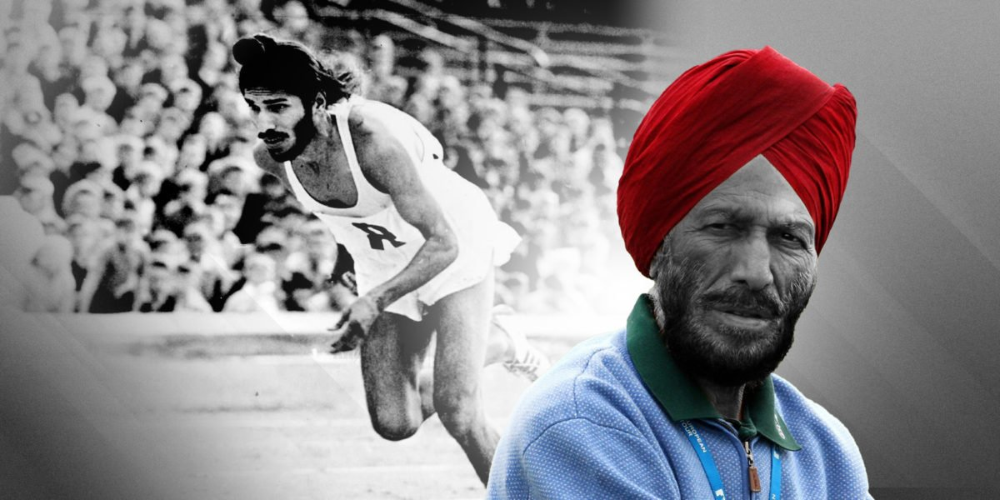

Milkha Singh
The Flying Sikh

At the 1960 Rome Olympics, 'The Fyling Sikh' finished 4th in the 400m, a decision that required a
photo-finish.
Here's a timeline of Milkha Singh:
- 1929- Born in Govindpura kilometres (6.2 mi) from Muzaffargarh city in Punjab Province, British India. He was one of 15 siblings, eight of whom died before the Partition of India. He was orphaned during the Partition
- 1947- Escaping the troubles in Punjab, where killings of Hindus and Sikhs were continuing, he moved to Delhi, India
- 1951- He joined the Indian Army and while stationed at the Electrical Mechanical Engineering Center in Secunderabad, he was introduced to Athletics. He had run the 10 km distance to and from school as a child and was selected by the army for special training in athletics after finishing sixth in a compulsory cross-country run for new recruits
- 1956- He represented India in the 200m and 400m competitions of the 1956 Melbourne Olympic Games
- 1958- Singh set records for the 200m and 400m in the National Games of India, held at Cuttack, Orissa and also won gold medals in the same events at the Asian Games. He then won a gold medal in the 400m (440 yards at this time) competition at the 1958 British Empire and Commonwealth Games with a time of 46.6 seconds. This latter achievement made him the first gold medalist at the Commonwealth Games from independent India
- 1960- Singh was persuaded by Jawaharlal Nehru to set aside his memories of the Partition era to race successfully in 1960 against Abdul Khaliq in Pakistan, where a post-race comment by the then General Ayub Khan led to him acquiring the nickname of The Flying Sikk. Singh had beaten all the leading contenders other than Otis Davis, and a medal had been anticipated because of his good form. However, he made an error when leading the race at 250m, slowing down in the belief that his pace could not be sustained and looking round at his fellow competitors. Singh believes that these errors caused him to lose his medal opportunity and they are his "worst memory"
- 1962- At the Asian Games, held in Jakarta, Singh won gold in the 400m and in the 4 x 400m relay
- 1964- Won the Calcutta National games in 400m
- 2012- All of Singh's medals have been donated to the nation. They were displayed at the Jawaharlal Nehru Stadium in New Delhi but later moved to a sports museum in Patiala, where a pair of running shoes that he wore in Rome are also displayed. He donated the Adidas shoes that he had worn in the 1960 400m final to a charity auction organised by actor Rahul Bose
- 2013- The book inspired Bhaag Milkha Bhaag, a 2013 biographical film of Singh's life. Singh sold the movie rights for one rupee but inserted a clause stating that a share of the profits would be given to the Milkha Singh Charitable Trust
If you have time, you should read more about this incredible human being on his Wikipedia Page .